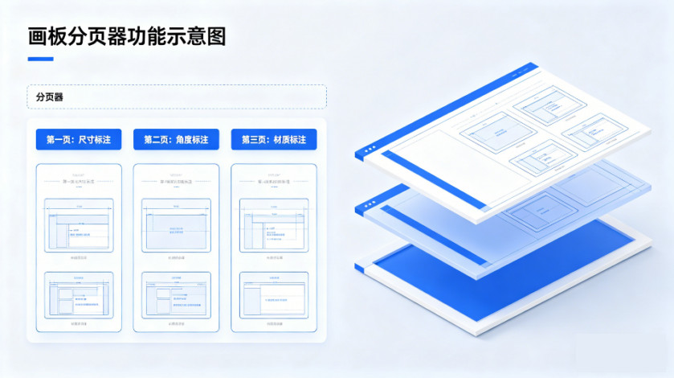
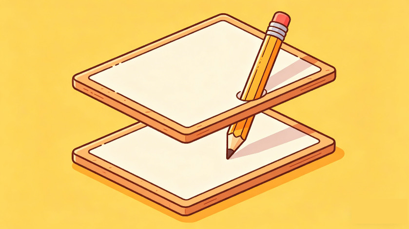
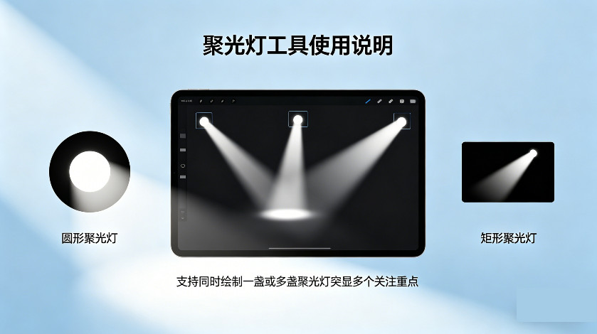
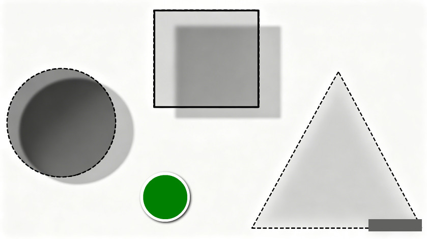
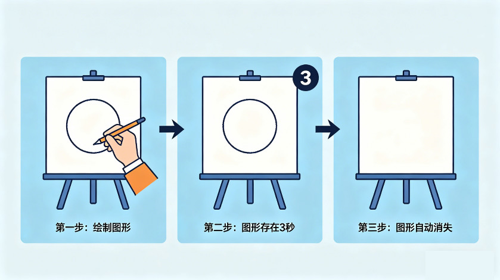
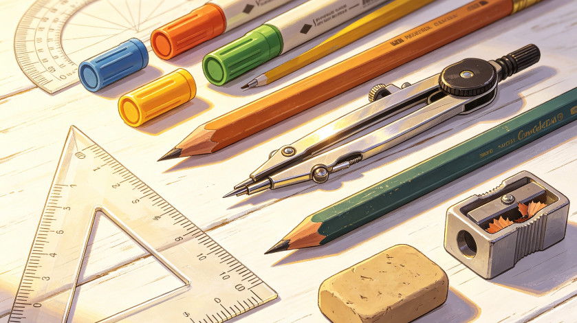
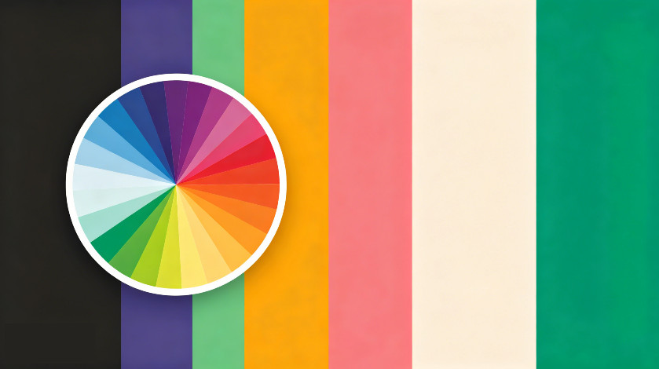
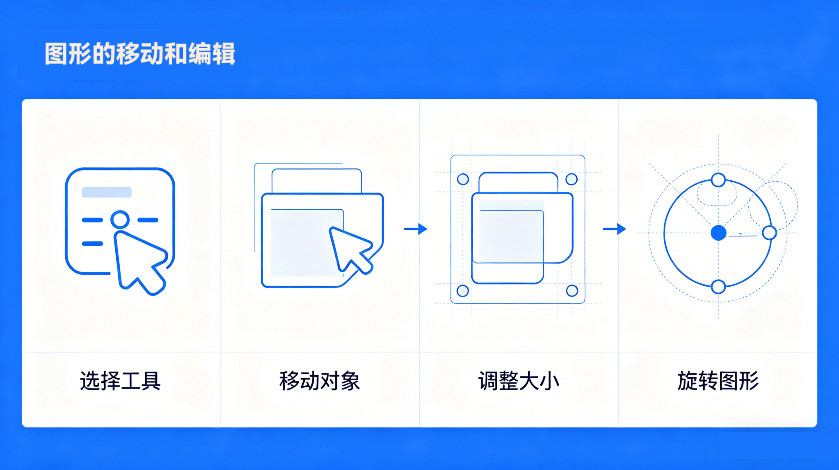
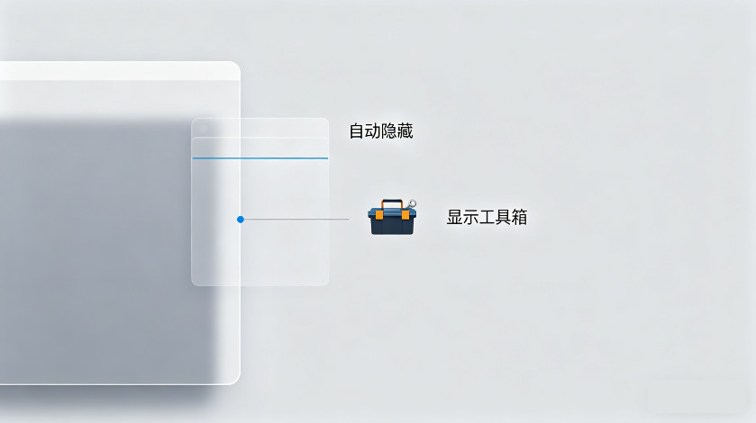

屏幕電子教鞭是一款簡單強大的虛擬標註工具，支持在任意軟件上自由畫圖、塗鴉與註釋，
可廣泛用於教學標註、遠程會議輔助、在線教育演示、圖解註釋、股市行情分析等等，
通過點擊穿透和畫板分頁器等獨家功能，在不打斷工作流程的同時高效提升表達、協作與互動效果。
軟件提供3種畫圖模式（經典模式、靈動模式、凍結模式）、12組畫圖工具、多個畫筆尺寸、數十個精選顏色及顏色面板、4種圖形效果（陰影、描邊、虛線、半透明）、畫板分頁器、多重聚光燈、筆跡消逝、多種可視命令模式、黑板白板等衆多功能；通過點擊穿透開關，可以方便的在畫圖和交互間快速切換，解決畫圖與交互的矛盾問題；通過強大的分頁器功能，分層標註、疊加顯示，解決複雜標註雜亂的問題。同時支持對圖形的再編輯（通過手柄調整外觀、尺寸、角度等）、複製、剪切、粘貼、撤銷等常規操作，支持對標註數據的保存和讀取，支持截屏保存，支持全快捷鍵操作，支持完全地自定義快捷鍵。畫筆工具箱支持在屏幕邊緣停靠（自動隱藏的顯示），不佔用空間。
經典模式和靈動模式都支持對動畫、視頻、遊戲等動態畫面的標註。
+ 經典模式下，可以直接在屏幕畫圖，通過永久或臨時開啓 畫板點擊穿透 功能，可以與第三方軟件交互。
+ 靈動模式下，可以直接和第三方軟件交互，通過永久或臨時關閉 畫板點擊穿透 功能，可以在屏幕進行畫圖。
+ 凍結模式，是專門用於針對失去焦點後會自動消失的界面的模式，比如菜單等，這類界面一旦焦點轉移就會自動隱藏，而凍結模式在啓動時會凍結屏幕狀態，從而實現對瞬態界面的標註，不過也因此它不支持對動態畫面的標註。
畫板分頁器可以將標註內容分頁進行，每頁的標註都是獨立的，比如第一頁標註尺寸，第二頁標註角度等，最後，可以選擇將部分或全部分頁進行疊加顯示，最終形成完整、複雜的標註結果。通過分頁器可以使解說和標註過程條理清晰，標註結果一目瞭然。


在解說或演示過程中，往往既需要在屏幕上畫圖、標註，也需要與第三方軟件進行交互。屏幕電子教鞭針對這種情況提供了二種方式，可以便捷的在畫圖和交互之間隨意切換，這種切換不需要退出畫圖模式，不會影響已經標註的內容，除非手動清除，所以不會打斷您的工作流程。
屏幕電子教鞭的聚光燈分爲圓形和矩形，聚光燈通常用於突顯屏幕中的重點內容。聚光燈工具支持在屏幕中同時繪製一盞或多盞，以突顯多個關注重點。繪製的聚光燈可以通過選取工具重新調整外觀、尺寸和位置等。


屏幕電子教鞭可以爲繪製的圖形增加陰影、描邊、虛線、半透明等四種圖形效果，這些效果可以單獨或疊加使用；圖形效果除了增加圖形的美觀外，還可以應對不同的畫圖需求。
筆記消逝可以讓繪製的圖形在一段時間後自動消失，免去“擦黑板”的步驟


屏幕電子教鞭提供了豐富的畫圖工具，包括自由曲線、直線、箭頭直線（單箭頭、雙箭頭）、指示箭頭、矩形、圓形、實心矩形、實心圓形、文字、聚光燈、圖標、截圖工具、選取工具、橡皮擦、全屏截圖等，同組工具可以用Tab鍵切換。
使用選取工具可以重新調整繪製圖形的外觀、尺寸、位置、顏色、效果等。
macOS版還提供了區域截屏、放大鏡、預置圖形等工具。
提供了幾十個精選顏色，無論是黑暗或明亮背景，都可以滿足畫圖需求；同時，還可以通過自定義快捷鍵爲10個顏色設置快捷鍵，以便快速切換。

屏幕電子教鞭的黑板、白板，各提供9個分頁，相當於18塊黑板白板。每個分頁中的標註內容會自動保存和加載，分頁中的內容也支持疊加顯示，支持數據導出。
屏幕電子教鞭提供完全地快捷鍵操作，同時，幾乎所有快捷鍵都支持自定義。

使用選取工具可以對繪製的圖形進行移動或再編輯，包括重新設置圖形的顏色、效果、尺寸等，通過圖形的調整手柄重新調整圖形的外觀、縮放、角度等。同時，支持圖形的單選和多選，支持對圖形的複製、剪切、粘貼、撤銷等常規操作。
將工具箱拖動到屏幕邊緣，可以讓工具箱自動隱藏到邊緣中，當鼠標再次滑過該邊緣處時，就可以自動顯示工具箱。
另外，雙擊工具箱的標題欄空白處，可以將工具箱最小化，也可以減少對屏幕的佔用。

注意，macOS版和Windows版可能存在部分功能差異，以下載的軟件爲準